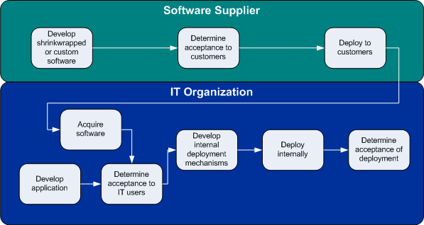

| Deploying Software and Systems |
 |
|
Both RUP and ITUP have a well-defined approach to deploying a software application or system. This includes everything from roll-out and installation to training end users.
CommonalityDeployment in RUP and ITUP are similar at the highest level of abstraction. It involves the following aspects:
However, the primary difference is the target of deployment. In RUP, the target of deployment is to get the developed software or system into the customer's hands, whereas in ITUP, the target of deployment is to roll out software or systems across all required platforms within the IT infrastructure. VariabilityThe primary difference between the RUP Deployment discipline and the ITUP Release Management process is the context in which they both work. To explain the contextual differences, it is important to understand two different perspectives on development and deployment.
The following figure depicts these two perspectives.  RUP primarily describes deployment from the vendor perspective, whereas ITUP primarily describes deployment from the IT organization perspective. This explains a number of other differences found between RUP and ITUP, including the following:
In addition, the activities performed by ITUP and RUP are somewhat different. ITUP has greater focus on the
development of the deployment mechanism. Here is how RUP and ITUP approach the deployment aspects mentioned in
the previous section:
Mapping Between RUP and ITUP
|
|
RUP Discipline
|
ITUP Process
|
 Deployment Deployment
|
Release Management |
Summary
Thus, the RUP Deployment Discipline and the ITUP Release Management Process are somewhat similar at the highest level of
abstraction, but they view deployment from two different perspectives. The target of RUP Deployment is to
get completed software or systems into a customer's possession, whereas the target of ITUP Release Management is to
roll out that completed software or system within the IT infrastructure. Because of this, RUP and ITUP
overlap to a small degree in the area of deploying software and systems.
| Supporting Materials |
|---|
© Copyright IBM Corp. 1987, 2007. All Rights Reserved. |